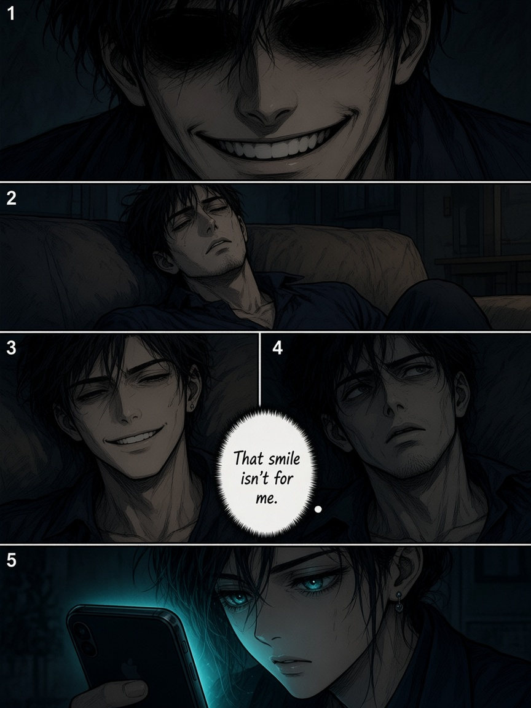
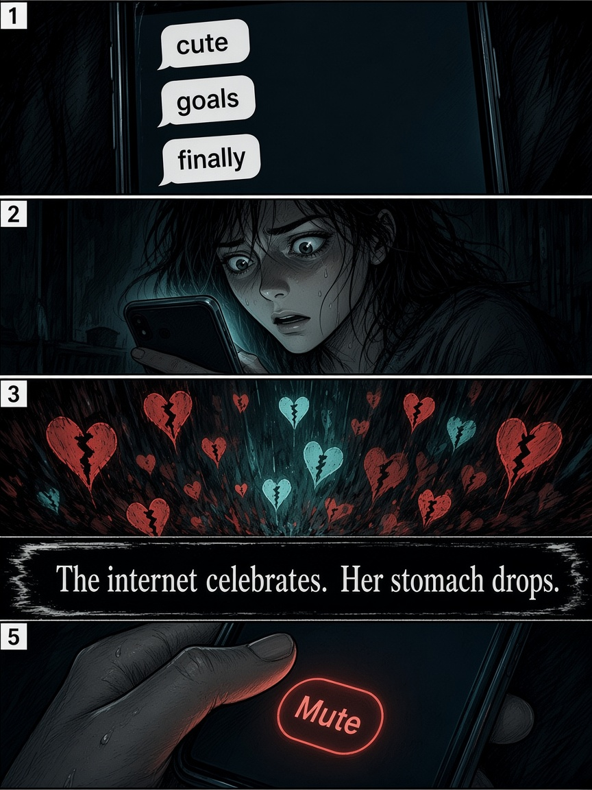
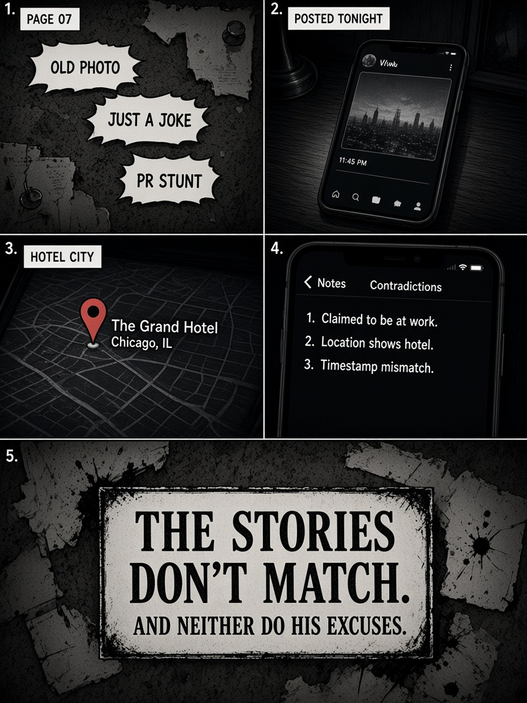
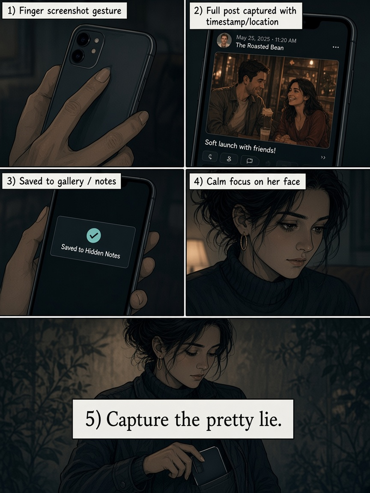
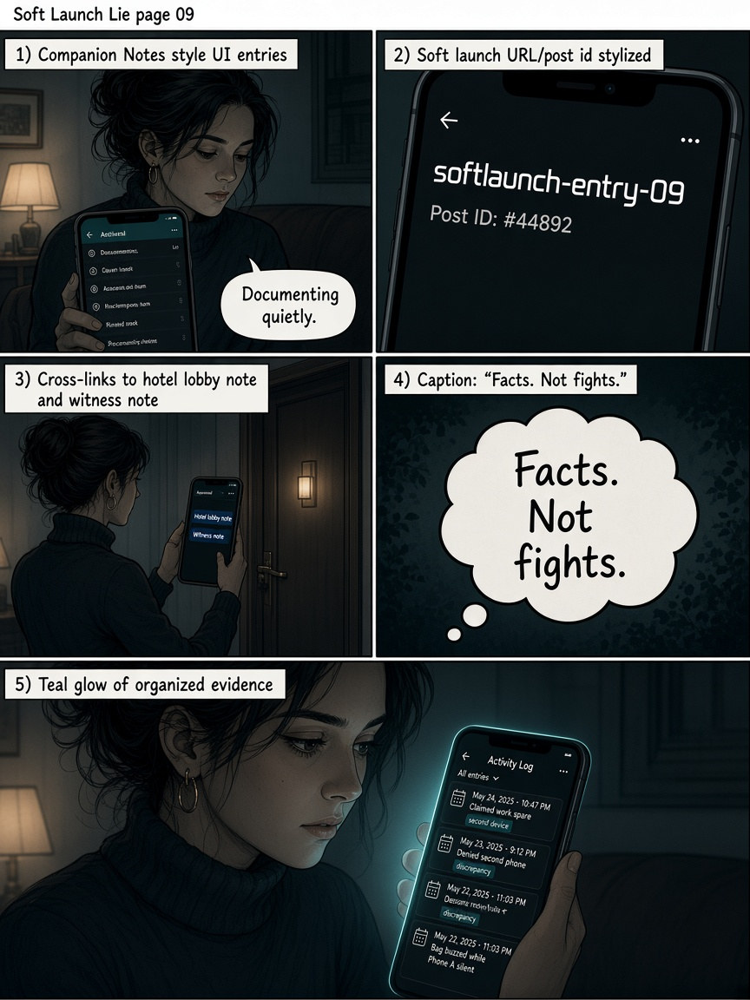
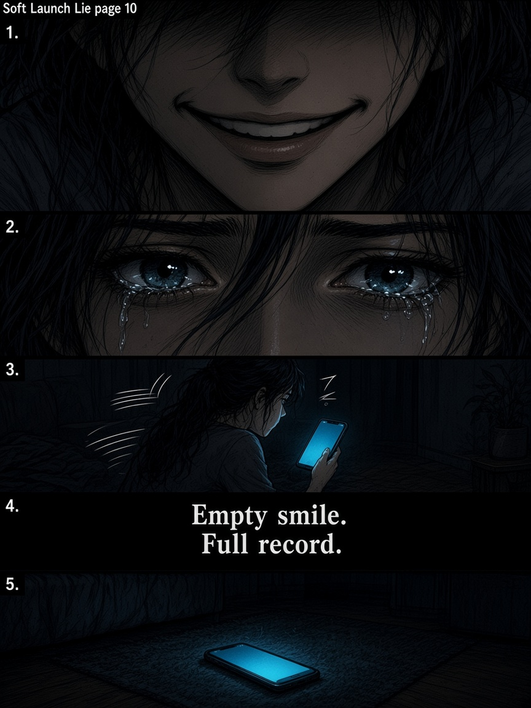
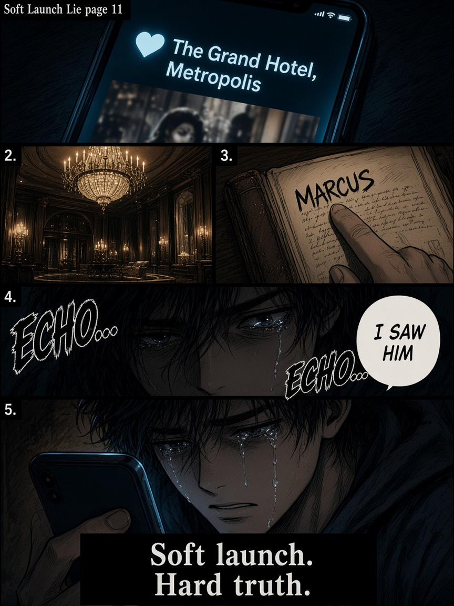
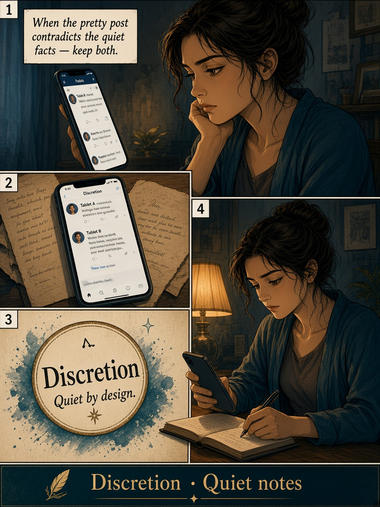
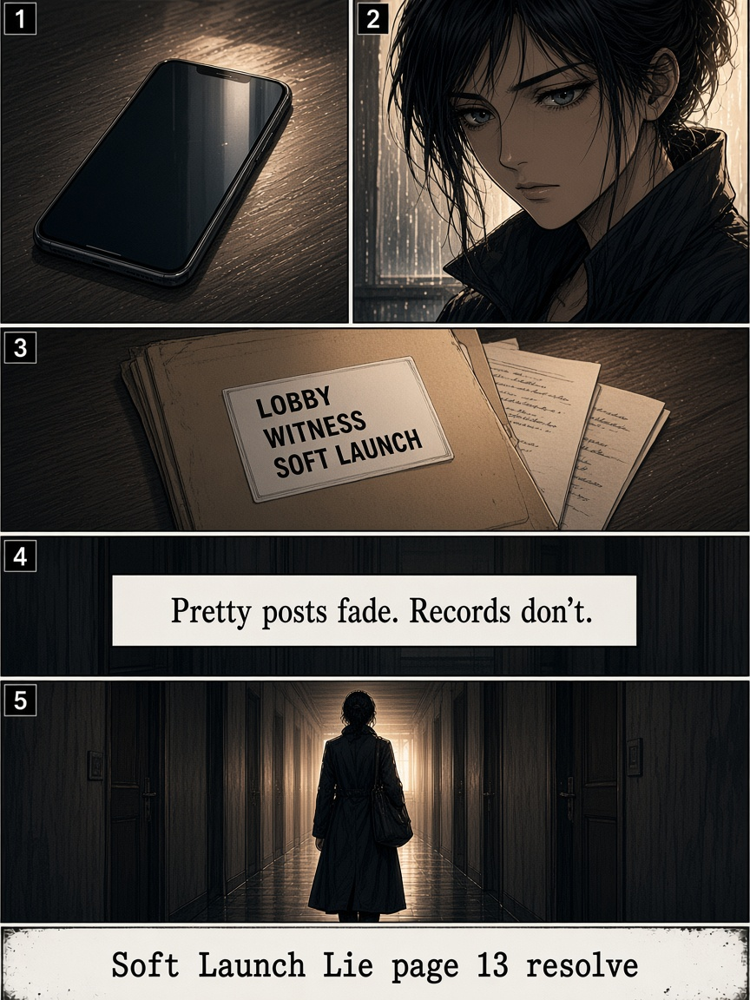

Pretty post. Empty smile. Soft launch, hard truth.
New chapter, they said.

That smile isn’t for me.

The internet celebrates. Her stomach drops.
Pretty feed. Ugly pattern.
Soft launch. Hard dodge.

The stories don’t match.

Capture the pretty lie.

Facts. Not fights.

Empty smile. Full record.

Soft launch. Hard truth.

When the pretty post contradicts the quiet facts — keep both.

Pretty posts fade. Records don’t.
Eight chapters. One habit: document.